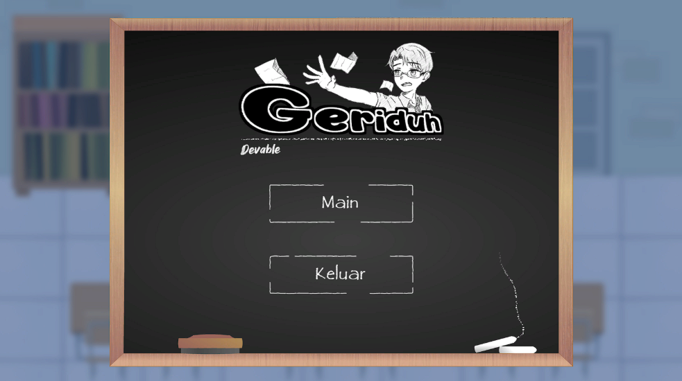

v1.0Geriduh
GERIDUH is a 2D top down game that tells the story of Praganis who only has a little time before taking an exam at his school. Players have several choices to choose from and will get a different ending in each choice.
My Role
As a Programmer supporting the Lead Programmer on Geriduh, I implemented the game's UI systems including the main menu, settings menu, and in-game HUD as well as the player character's movement. based on the technical direction set by the lead. I worked closely with them to make sure my code integrated cleanly with the rest of the systems, and helped with bug fixing and testing across the project.